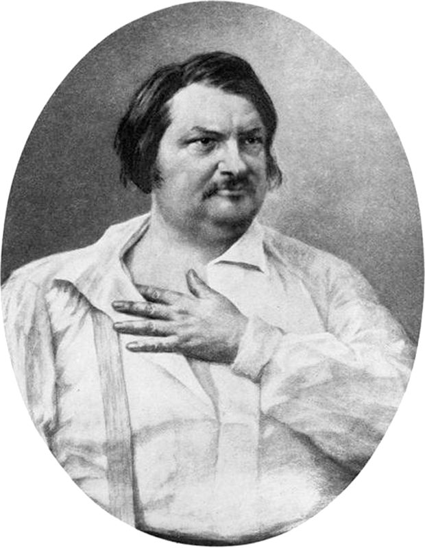

perk up
… to perk you up again.
让你重新来精神
perk up 是振作、提神，说人说植物都行。
第 1 章后半讲反馈：存量的高低反过来决定流进流出它的流量，因果链首尾接上，成了一个回路。书里讲两种回路。调节回路朝一个目标拉，偏高往下拉，偏低往上拉，越近越慢，热咖啡凉到室温就是它。增强回路越多长得越多，越少掉得越快，利滚利、水土流失都是它。好玩的地方在于，一个系统可以自己产生自己的行为，用不着谁在背后推。读的时候盯住一件事：这个流量是不是看了存量才定的。
第 1 章前半（01a）讲完了存量和流量：存量只能靠流量慢慢变，流入流出之差定方向，相等时是动态平衡；最后说人的决策多半是在调存量。这一页从那句话接着走。§4 把「看着存量调流量」定义成反馈回路，§5、§6 各讲一种回路，§6 收尾时预告第 2 章：真实系统里好几个回路同时拉一个存量。01a 的概念这里直接用。
热咖啡放凉和存款利滚利，一个越变越慢，一个越变越快，差在哪里？
读的时候带着这几个问题，读完回来对照「检查一下理解」。
这一页是原书和译本第 1 章的后三节。粗体是本站给的节名，后面是档和译本字数；下面一行是译本的小标题和这一节在译本电子书里开头的几个字（搜它就能跳过去），再下面是英文原书的小标题和开头几个词，翻纸书用。读完打个勾。

先把这一页用到的几个概念用书外的例子讲一遍。作者拿它们推出什么，读原书时自己看。后面各页用到时会链回这里。
存量的高低经过一串规则、决定或物理规律，反过来改变流进流出它的流量，因果链首尾接上，就是反馈回路。手机电量是个存量：电量低于 20% 你就去充，充满就拔，充电这个流入是看着电量定的。图里那条细的弯箭头叫信息连接：它不运东西，只把「现在有多少」送到阀门那里。存量自己不会动手，动作总是落在调流量上。
判断有没有回路，问一句：这个流量的大小，是不是看了存量才定的？每月固定定投 1000 元，不管账户里已经有多少，那就只是一条开放的链。书里给的线索是：存量长期稳在一个范围，或者一路猛涨猛跌，很可能有回路在起作用。只是「很可能」：两股流量碰巧一样大，存量也能稳住。
在这一页：§4 用活期账户讲回路，图 1—8 教怎么读带回路的图：方框、粗箭头、细弯箭头，三样分清。
调节回路有一个目标。它比较「现在有多少」和「想要多少」，由差距驱动行动：偏高往下拉，偏低往上拉。恒温空调、自动扩缩容、看到余额少了就少花点，都是它。目标可以是人定的，也可以是物理规律定的：一杯咖啡的「目标」是室温，没有谁在做决定，只是温差越大，散热越快。
它的标志是越接近越慢。拿咖啡说，温差每分钟缩小同样的比例：温差大时一分钟走得远，温差小时一分钟只挪一点。往下走的不一定是调节回路，要看变化的快慢跟着差距走，还是跟着存量本身走。译本：「寻的」是导弹术语（「的」读 dì），意思就是朝目标走。书后术语表说它又叫「负反馈」：负是和变化的方向相反，不是差评。
在这一页：§5 先讲喝咖啡提神（人做决定），再讲咖啡变凉、变暖（物理规律），最后说回路在不等于回路管用。
增强回路里，存量越多，流入越多；越少，流入越少。变化朝哪个方向，它就把哪个方向放大。一个开源项目贡献者多了，修 bug 快、名气大，来的人更多；冷清下来，issue 没人回，剩下的人也陆续走了。书里说它可以是良性循环，也可以是恶性循环，看它把变化往哪边放大。
往下掉的增强回路最容易认错。咖啡变凉是往下、越来越慢、停在室温；水土流失也是往下，却越来越快：土冲走了，植物少了，固土的根少了，土冲得更快。书后术语表说它又叫「正反馈」，「正」只是和变化同向。雪崩也是正反馈，和中文里说的「好评」不相干。
在这一页：§6 先列五个小例子，再讲存款（图 1—12、1—13）和资本再投资（图 1—14）。
每期按自己的固定比例长，叫指数增长。100 块按年利率 7% 存着，第一年多 7 块，第十年那一年多 13 块左右，因为基数大了。和它对照的是线性增长：每期加一个固定的数。每年固定多 7 块，四十年后是 380 块；按 7% 利滚利，四十年后是 1497 块。头几年两条线贴得很近，所以低利率的存款看起来像直线。
指数增长的存量翻一倍要的时间，约等于 70 除以每期的百分比增长率：7% 约 10 年，5% 约 14 年。拿 70 去除的是 7，不是 0.07。这是个近似：每年结一次息时，7% 第 10 年是 196.72，第 11 年才过 200。本站补一句：调节回路的差距按比例缩小，也有一个「减半时间」，算法相同。
在这一页：§6 的方框讲 70 法则。模拟器的存款那一半可以亲手对数。
先猜：一杯 100°C 的咖啡放在 18°C 的屋里，不喝，8 分钟后大约多少度？一杯从 0°C 开始的冰咖啡，8 分钟后呢？再猜：100 美元按年利率 7% 存着不动，第几年第一次到 200 美元？
用最上面两个按钮切换：咖啡是调节回路，存款是增强回路。打开页面时是咖啡，用的是和书上图 1—11 对得上的一组数。
需要浏览器打开脚本才能运行。
咖啡：图上六条线是书里那六杯，起点 100、80、60、10、5、0°C，都不喝。「室温」是这个回路的目标，咖啡最后都往它那里走；「凉得快慢」是每分钟把咖啡和室温的温差缩小百分之几，杯子薄、有风就快，保温杯就慢；「看多久」是横轴有几分钟。每 15 秒算一次：温度加上（室温 − 温度）× 比例 × 0.25 分钟。书后附录写的是每分钟 10%、每分钟算一次，照它算，100°C 的咖啡 8 分钟后还有 53°C，和书上图 1—11 的约 28°C 对不上；每分钟 25%、每 15 秒算一次，画出来和书上的图几乎重合，本站默认用它，10% 留在选项里。附录的变凉、变暖是两组方程，本站合成一条，结果一样。
存款：前五条线是书上图 1—13 的五种年利率（2%、4%、6%、8%、10%），100 美元存着，不存不取，每年按余额结一次息，和书后附录的模型一样；最后一条虚线是「你的利率」。「看多少年」默认 12 年，和书上的图一样长。横虚线是 200 美元，也就是翻倍。
这个模拟器里每次只有一个回路在起作用。真实的存款还有存取、通胀和税，真实的咖啡还受杯子、蒸发、搅拌影响，模型的数只是示意。几个回路同时拉一个存量，是第 2 章的事。
读英文原书时值得停一下的词和句：熟词生义、Meadows 的口语和比喻。灰色斜体是原句里连续的几个词，在英文电子书里搜它就能找到；标「每个字都认识」的，是每个词都眼熟、合起来意思却变了的，最容易读错。点「记下」收进词本。
对着译本读这三节时，下面这些地方会把人读歪。方框里是译本的原句，在译本电子书里搜它就能找到；灰色斜体是英文原书那一处。只收意思错了、反了、漏了的，措辞上的出入不收。全书的勘误汇总在译本勘误。
… it is likely that there is …
译本：「我们可以很肯定地说」
原文两处都是 likely：存量长期猛涨、猛跌或稳在一个范围，很可能有控制机制在起作用。译本一处说成「很肯定」，同一段又说「就一定存在」。作者在 §4 还说有的系统根本没有回路，长期稳定只是线索，不是证明。
… feeds back through a chain of signals …
译本：「从而形成一系列连锁反应」
这是反馈的定义：存量的水平经过一串信号和行动，反过来控制它自己，因果链首尾相接。「连锁反应」只说一件接一件地发生，链条不回到起点，回路的意思就丢了。
… action or change always proceeds through …
译本：「行动或改变通常是通过调整流量的方式进行的」
图 1—8 的图注原文是 always。存量只能靠流量改变，这一条没有例外。「通常」留了一个不存在的口子，好像有时可以绕过流量直接改存量。
… a desired stock level (energy for work).
译本：「在头脑中有一个期望的精神状态」
原文的存量是干活用的能量，图 1—9 里这个存量标作「可用的能量」（左边另一个存量是「身体内储存的能量」）。译本正文改成精神状态，对着图会找不到这个存量。§5 讲喝多了、能量过剩的那一段，说的也是能量。
… can correct an oversupply as well as …
译本：「也可能导致能量供应过量」
原文：这个回路既能纠正不足，也能纠正过量，所以图上的标签不带方向。译本说成回路「可能导致过量」，正好反了，也和同一段「喝多了就少喝」的意思对不上。
… lay off the caffeine for a while.
译本：「你不得不活动一会儿」
lay off 是暂时戒掉。原文的意思是回路去调流入：能量多了，你就少喝咖啡。译本改成去活动、把咖啡因代谢掉，调的就不是这个回路里的流量了。
… stabilizing, goal-seeking, regulating loop is called …
译本：「表现出“寻的”或“动态平衡”的特征」
原文说调节回路是 goal-seeking 或 stability-seeking：朝目标走、趋向稳定。「动态平衡」是 01a 的另一个概念，指流入等于流出、存量不动。回路往回拉的时候存量正在变，并不处于动态平衡。「寻的」读 dì，就是朝目标走。
… as if this were circular reasoning …
译本：「看起来好像是循环迭代的」
circular reasoning 是循环论证：拿结论当理由。Tinbergen 的意思是：「利润降是因为投资降，投资降是因为利润降」听着像循环论证，其实是一个真实的增强回路。「循环迭代」把这层转折译没了。
… grow as a constant fraction of itself.
译本：「或者持续增长时」
原文：凡是能自我复制、或按自身的固定比例增长的要素，就有增强回路。固定比例正是指数增长的定义。「持续增长」把每年加固定数的线性增长也包进去了，而线性增长背后没有增强回路。
… depending on what is growing …
译本：「不同的人对好坏的评判是有差异的」
原文只有一句：指数增长是好是坏，看长的是什么，后面列了存款、HIV/AIDS 感染者、害虫、经济、武器。「高利贷」那句和「不同的人评判不同」都是译本加的，读来像艾滋病蔓延是好是坏也见仁见智。
Figure 14. Reinvestment in capital.
译本：「资本再投资推动成长」
图上左下角那个变量，原图是 fraction of output invested：产出里拿去投资的比例。译本图上写成「投入产出比」，那是经济学里另一个概念。在这张图里，它决定产出有多少回到投资这个流量。
… without regard to any information about …
译本：「我们人类在制定决策时会怎么样」
原文是她给学生出的题：想一个不考虑存量信息就做出的决定，也就是没有反馈的决定。译本改成「如果没有反馈回路，决策会怎样」，题目变了，学生拿恋爱和自杀作答就接不上了。
… decide whether you think these are …
译本：「但是，我对此持保留意见。」
原文只说：这两个算不算真的不带反馈的决定，留给你自己判断。「我对此持保留意见」是译本加的，读来像作者不同意学生的答案。
… REINFORCING LOOPS AND DOUBLING TIME
译本：「对增强回路和时间翻倍的提示」
doubling time 是翻倍时间：存量翻一倍要多久。「时间翻倍」成了时间本身加倍。同一框里 handy 译成「很容易知道」，原意是这个速算法好用。方框正文作「存量翻倍所花费的时间」，是对的。
… how poverty may cause population growth.
译本：「可能会使自己深陷其中、痛苦不堪」
原文这一段到「贫困是否也导致人口增长」就停了。「诸如此类……甚至是不可能的」整句是译本加的。作者的语气是兴奋的：你快成系统思考者了，不是劝人知难而退。
下面是作者在这三节里的主张，本站按主张之间的逻辑重排，不按原书顺序；每条后面是节号，拿不准就回书里那一节再读一遍。
有人或有规则盯着存量，高了低了就去调流入或流出，存量经过一串信号和行动控制自己，动作总是落在流量上。存量长期猛涨、猛跌或稳在一个范围，她说「很可能」有回路；但不是所有系统都有回路，有的只是两头开着的链。
§4A feedback loop is formed when changes in a stock affect the flows into or out of that same stock.— §4。本站译：一个存量的变化影响到流进或流出这同一个存量的流量，就形成了反馈回路。
实际和目标的差距驱动行动，往哪边偏就往哪边拉回来，所以她把图上的标签都写成不带方向的。差距越小变得越慢，咖啡朝室温走就是这个样子。同一个回路让存量稳住，也让想改变它的人遇到阻力。
§5信息可能来得太晚、送错地方、看不清，触发的行动可能太弱、太慢、缺资源，存量也许永远到不了目标。她也提醒画图是在挑选：咖啡因只让身体转得快，不给身体加油，劲头过了，身体比喝之前更缺能量。
§5存量越多流入越多，越少越少。能自我复制、或按自身固定比例增长的东西都有它：人口、经济、存款。指数增长是好是坏，看长的是什么。翻倍时间约等于 70 除以百分比增长率。她把资本再投资叫作经济增长的核心引擎。
§6她让学生想一个不看存量信息的决定，学生常举恋爱和自杀，她把判断留给读者。习惯看回路以后，人会少问该怪谁，多问系统是什么样的。真实系统里回路成群出现、互相拉扯，行为远比单个回路复杂。
§6The concept of feedback opens up the idea that a system can cause its own behavior.— §6。本站译：反馈这个概念让人想到，一个系统可以产生它自己的行为。
合起来：看一个存量，先找有没有人或规则在看着它调流量；有的话，看它是朝目标拉，还是越滚越大。行为不必有外人推，结构自己就能产生它。第 2 章让几个回路同时作用在一个存量上。
这一章合起来：第 1 章搭好了全书的工具箱。系统是要素、连接、目标三样，最难看见的目标常常最要紧。看一个系统先找存量：存量只能靠流量慢慢变，所以有惯性，也能缓冲。人和规则盯着存量去调流量，就有了反馈回路。书里讲两种：调节回路朝目标拉，越近越慢；增强回路把变化放大，越滚越快。后面各章用来搭模型的，就是存量、流量和这两种回路。
处境是本站编的，放在你可能遇到的地方。先自己想，再点开看分析；有的题不只一个答案。全书的情境题汇总在情境题。
运维写了一个定时任务：每天凌晨 3 点删掉 7 天以前的日志，不管磁盘还剩多少。一年里磁盘用量一直稳在 60% 上下，大家都说这套清理机制很稳。这个月接了一个新业务，每天的日志量翻了一倍，不到一周磁盘就写满了，服务跟着挂掉。
这套清理机制里有反馈回路吗？「稳了一年」说明了什么？要怎么改？
没有回路。删多少只看日志的日期，不看磁盘用了多少，是一条两头开着的链：流入是每天写进的日志，流出是每天删掉的旧日志。前一年稳，是因为每天写进和删掉的量差不多，像浴缸进出水一样快，并不是谁在看着磁盘调。日志量一翻倍，流入大于流出，磁盘只会一天比一天满。
书里说长期稳定是有回路的线索，这里正好是线索骗人的情形。改法是让流出看存量：磁盘超过 80% 就多删一些，同时发告警。这才是一个调节回路。
书里对应：§4 反馈：系统是如何运作的
一个线上服务设了自动扩缩容：每分钟看一次所有实例的平均 CPU，高于 60% 就按超出的多少加实例，低于 60% 就按比例减。晚高峰流量上来，实例从 10 台一路加到 24 台，曲线一直往上走。新来的同事说：这是增强回路，实例越多加得越多，再不管就要把预算烧光了。
他说得对吗？这是哪种回路，存量和目标各是什么？
选 B。驱动加实例的是「实际 CPU 和 60% 之差」，不是实例数本身：实例加上去，平均 CPU 降下来，差距缩小，加得就慢了，到 60% 附近就停。曲线一路往上，只说明外面的流量在涨，不能拿来判断是增强回路。判断回路的种类不看方向，看驱动变化的是差距还是存量本身。
存量是实例数，目标是 CPU 60%。预算要担心的是另一件事：流量真在涨，回路会忠实地跟着加。另外，它每分钟看一次，新实例启动也要时间，这种延迟会让它加过头，第 2 章讲。
书里对应：§5 自动洄游的鱼：调节回路
一个查询服务平时每秒处理 800 个请求，上限约 1000 个。调用方都配了「超时就立刻重试，最多 3 次」。某天数据库抖了 30 秒，查询变慢，一部分请求超时。数据库早就恢复了，服务却越来越慢，超时越来越多，每秒涌进来的请求涨到两三千，最后整个挂掉。值班的人一开始还在查数据库。
这里在起作用的是哪种回路？从哪个存量画起？怎么改能让它停下来？
是增强回路，朝坏的方向转。存量可以取「排队等处理的请求」：积压多了，响应变慢，超时变多，重试变多，流入更多，积压更多。数据库那 30 秒只是推了一把，之后回路自己转下去，所以修好数据库也没用。只盯着触发它的那一下，就会一直在查数据库。
改法是给它配一个往回拉的回路：重试之间等一会儿，等待越来越长并带点随机；限制重试的总量；过载时直接拒绝一部分请求，也就是限流、熔断。这些都是工程师有意装上去的调节回路。
书里对应：§6 脱缰的野马：增强回路
一个小程序现在有 1 万个用户。运营统计了半年，每月新增的用户大约是当月用户数的 7%，大多是老用户拉来的，流失很少。老板问：照这个势头，多久到 2 万？市场部的同事算的是：每月多 700 人，大概 14 个月。
哪种算法更合理？两种算法差在哪里？
新增按当月用户数的比例算，是增强回路，用翻倍时间：70 ÷ 7 = 10，大约 10 个月。按月一步步算，第 10 个月约 19672 人，第 11 个月约 21049 人。市场部把每月新增固定在 700 人，是线性增长，要到第 15 个月才过 2 万。差在用户多了以后，拉来的新人也跟着多。两种算法头几个月几乎一样，越往后差得越大。
也别把增强回路当成永远：能拉的人总有限，新增迟早会慢下来，那是第 2 章「增强回路碰上调节回路」的事。
书里对应：§6 脱缰的野马：增强回路（讲翻倍时间的方框）
Meadows 1993 年写成初稿，书 2008 年出版。下面挑出这一页里能被后来的研究或事情检验的说法，分「书里 / 当时 / 今天」几栏，并给一个结论。结论判的是标题里「书里的说法：」后面那一句。全书的这一节汇总在今天怎么看。
读完作者的主张，再看它站不站得住。每一块摆出三样：主流怎么看，作者怎么看，本站的评论。最后一句是本站对这一页的总体判断。
主流看法：经济学讲增长的标准模型是 Robert Solow 1956 年提出的：资本越积越多，每多一台机器带来的产出越来越少（收益递减），光靠再投资，人均产出最后会停在一个水平上；人均产出要一直涨，得靠技术进步。1980 年代以后的「内生增长」理论接着去解释技术进步本身从哪里来。
作者的看法：资本生产产出，产出的一部分再投资变成资本，这个增强回路是经济增长的核心引擎。§6
本站的评论：作为一个回路，她画的没有错：工厂多了产出多，能拿去投资的也多。分歧在「核心引擎」四个字。Solow 的模型里，这个回路会自己慢下来，因为折旧和收益递减在往回拉；她在第 2 章也给资本加上了折旧，后面还会讲增长碰到的极限。对经济学不熟的读者，记一句就够：再投资能让经济长大，主流经济学认为让它一直长下去的主要是技术进步。
主流看法：统计和计量经济学把「B 也影响 A」叫作反向因果或联立性，是因果推断里要专门排除的一类问题。她举的美联储就是一个被量化过的例子：John Taylor 1993 年提出的泰勒规则，用通胀偏离目标多少、产出偏离潜在水平多少，算出联邦基金利率该定多高，相当于把「经济怎样影响美联储」写成了一条公式。
作者的看法：看到 A 导致 B，就问 B 是否也导致 A；你会开始到处看见反馈回路。恋爱和自杀算不算没有反馈的决定，她留给读者判断。§6
本站的评论：作为发问的习惯，这一条很值钱：看到「用户流失导致收入下降」，再问一句收入下降是不是也让产品投入少了，流失更多。但想得出一个回路，不等于它强到起作用。要说 B 影响 A，得拿数据看方向和大小。01a 的浴缸也提醒过：存量长期不动，可能只是两股流量碰巧相等，背后并没有回路。
主流看法：Bronson 等人 2021 年在 HotOS 会议上的论文《分布式系统中的亚稳态故障》（Metastable Failures in Distributed Systems）把一类事故单独拿出来讲：一次触发（流量尖峰、短暂故障）把系统推进坏状态，之后重试之类的机制让它自己维持下去，触发因素没了也恢复不过来。2022 年 OSDI 会议上的后续研究分析了 11 个机构的 22 起这类事故。
作者的看法：增强回路可以带来健康的增长，也可以带来失控的毁坏；往下掉的回路一样是增强回路，水土流失就是。§6
本站的评论：程序员最该记住的是这一半。中文里「正反馈」听着像夸奖，系统里它只说和变化同向，雪崩、挤兑、重试风暴都是。对付它的办法也是书里的思路：给它配一个往回拉的回路，比如重试前等一会儿、过载时拒绝一部分请求。§5 讲的调节回路，在机房里多半是工程师有意装上去的。
本站的总体看法：这三节是全书的基本概念，定义清楚，两种回路的算术没有争议，咖啡和存款两个模型可以亲手算对。要小心的是两处延伸：把资本再投资叫作经济增长的核心引擎，主流经济学有不同的答案；到处看见回路是好习惯，但回路强不强要拿证据说。
先在心里答，再点开。答错的那题，回书里把对应那一节再读一遍。
看流量的大小是不是看了存量的水平才定的。存量变了，流量跟着调，因果链回到存量本身，才是回路；流量由外面定死，就只是一条开放的链。
不能。长期稳定只是「很可能」有回路的线索。两股流量恰好一样大也会稳，像进出水一样快的浴缸；外面的条件一变，没有回路的存量不会被拉回来。
凉得快慢取决于咖啡和室温的温差。温差大，每分钟散掉的热多；温差越来越小，每分钟散掉的也越来越少，所以越走越慢，越来越贴近室温。
它把存量往目标拉，偏哪边都拉回来，所以系统稳。可你想把存量推到一个新水平时，它同样往回拉，你会遇到阻力。
信息来得太晚、送错地方、不清楚；或者触发的行动太弱、太慢、受资源限制。回路在，存量也可能永远到不了目标。
看变化的快慢跟着什么走。水土流失：土越少，植物越少，固土的根越少，冲得越快，越掉越快。咖啡变凉跟着和室温的差距走，越接近越慢，到室温就停。
按比例增长用 70 法则：70 ÷ 5 = 14 年。每年加固定的量是线性增长，没有固定的翻倍时间，要看起点：从 100 开始每年加 5，要 20 年才到 200。
用一句话说这一页：
想一想：你身边有没有一个往坏处转的增强回路（越忙越没时间理清楚、越理不清越忙；技术债越多改得越慢、改得越慢欠得越多）？如果要给它配一个往回拉的回路，那个回路的目标和信息从哪里来？
读过又忘了，从这里想起来。挑的是这一页最值得记住的例子和说法，不按原书顺序；每条后面是节号，想细看就回书里那一节。全书各页的这一节都收在全书回顾。
一句话：存量反过来调自己的流量就是反馈；调节回路朝目标走、越近越慢，增强回路越滚越大，系统可以自己产生自己的行为。
存量的高低经过一串决定、规则或物理规律，反过来调流进流出它的流量，就是反馈回路。动作总是落在流量上。
§4图上写「体内储存的能量」，不写「能量不足」：调节回路两个方向都管。喝多了咖啡，你会停一阵不喝。
§5一杯往下凉，一杯往上暖，都朝室温走，温差越小走得越慢。没有谁在做决定，靠的是物理规律。
§5信息可能来得太晚、送错地方，行动可能太弱太慢，存量也许永远到不了目标。
§5翻倍时间约等于 70 除以百分比增长率。按年结息算，第 10 年是 196.72 美元，第 11 年才过 200。
§6她让学生想一个不看存量信息就做的决定，学生最常举恋爱和自杀。算不算，她留给读者自己判断。
§6